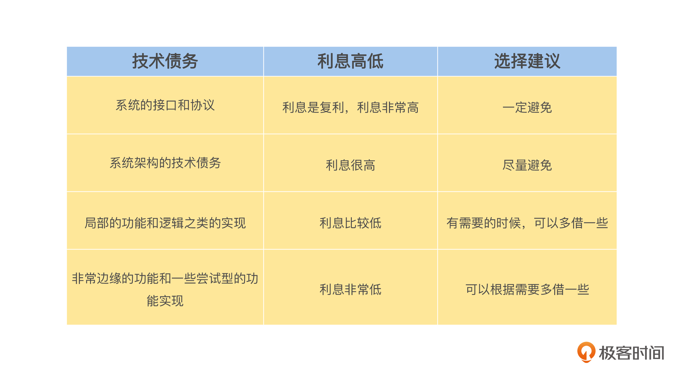

- 00 开篇词 掌握好学习路径，分布式系统原来如此简单.md
- 01 导读：以前因后果为脉络，串起网状知识体系.md
- 02 新的挑战：分布式系统是银弹吗？我看未必！.md
- 03 CAP 理论：分布式场景下我们真的只能三选二吗？.md
- 04 注册发现： AP 系统和 CP 系统哪个更合适？.md
- 05 负载均衡：从状态的角度重新思考负载均衡.md
- 06 配置中心：如何确保配置的强一致性呢？.md
- 07 分布式锁：所有的分布式锁都是错误的？.md
- 08 重试幂等：让程序 Exactly-once 很难吗？.md
- 09 雪崩（一）：熔断，让故障自适应地恢复.md
- 10 雪崩（二）：限流，抛弃超过设计容量的请求.md
- 11 雪崩（三）：降级，无奈的丢车保帅之举.md
- 12 雪崩（四）：扩容，没有用钱解决不了的问题.md
- 13 可观测性（一）：如何监控一个复杂的分布式系统？.md
- 14 可观测性（二）：如何设计一个高效的告警系统？.md
- 15 故障（一）：预案管理竟然能让被动故障自动恢复？.md
- 16 故障（二）：变更管理，解决主动故障的高效思维方式.md
- 17 分片（一）：如何选择最适合的水平分片方式？.md
- 18 分片（二）：垂直分片和混合分片的 trade-off.md
- 19 复制（一）：主从复制从副本的数据可以读吗？.md
- 20 复制（二）：多主复制的多主副本同时修改了怎么办？.md
- 21 复制（三）：最早的数据复制方式竟然是无主复制？.md
- 22 事务（一）：一致性，事务的集大成者.md
- 23 事务（二）：原子性，对应用层提供的完美抽象.md
- 24 事务（三）：隔离性，正确与性能之间权衡的艺术.md
- 25 事务（四）：持久性，吃一碗粉就付一碗粉的钱.md
- 26 一致性与共识（一）：数据一致性都有哪些级别？.md
- 27 一致性与共识（二）：它们是鸡生蛋还是蛋生鸡？.md
- 28 一致性与共识（三）：共识与事务之间道不明的关系.md
- 29 分布式计算技术的发展史：从单进程服务到 Service Mesh.md
- 30 分布式存储技术的发展史：从 ACID 到 NewSQL.md
- 春节加餐 技术债如房贷，是否借贷怎样取舍？.md
- 春节加餐 深入聊一聊计算机系统的时间.md
- 春节加餐 系统性思维，高效学习和工作的利器.md
- 结束语 在分布式技术的大潮流中自由冲浪吧！.md
春节加餐 技术债如房贷，是否借贷怎样取舍？
你好，我是陈现麟。我要先给假期还在坚持学习的你点个赞。
在我们日常的研发工作中，有时候会出现这种情况，因为业务方希望产品能立即上线，所以提出了“这个需求很简单，怎么实现我不管，明天上线”的特殊要求。虽然不至于总是出现这种情况，但是，希望产品能立即上线和研发投入成本之间的矛盾是一直存在的。
在充分评估的请求下，工程师只有通过借技术债务的方式来达成目标，所以技术债务是我们日常研发工作经常需要面对的一个问题。
但是根据我的观察，人们对于技术债务的理解是众说纷纭的，有的人认为必须要借技术债务，这是没有选择的办法，而有的人却认为技术债务要尽量避免，避免架构设计、代码逻辑被技术债务污染，那么工程师们到底应该怎么看待技术债务呢？
基于人们的不同讨论，在这期春节加餐中，我想和你聊一聊技术债务的事情。我们一般说的技术债务指的是，将一些技术方案通过简单、粗暴的方式来实现，以减少研发资源和研发时间的投入。
但是从本质上来说，技术债务也是一种借贷行为，相当于在我们现在的项目中通过技术债务的形式，向未来借贷了研发资源和研发时间，那么当我们在未来的一个时间点，通过重构的方式优化项目中的技术债务时，其实就是在用研发资源和研发时间来偿还技术债务了。
因为技术债务是一种抽象的债务，直接讨论可能比较枯燥，也不好理解，所以，在本期课程中，我将结合你在日常生活中，经常会接触到的贷款买房的模型来类比思考，通过你熟悉的贷款买房，来分析技术债务的各个方面。
首先我会结合贷款买房的不同情况，讨论我对技术债务的看法，接着根据重要的利息问题，为你总结一份借贷清单，最后再来聊聊不偿还的危害，让你意识到不断偿还技术债务的重要性，从而对技术债务有一个理性和清晰的认识。
技术债务是生产力
我们应该怎么来看待技术债务呢？它是我们架构中的洪水猛兽，会影响整个工程的成败，还是生产力，能推动工程的快速发展和迭代呢？
这里我们先从生活场景入手，分析一下我们会因为什么原因用贷款的方式买房。
首先，是钱不够的情况。不贷款买不起房子，但是我们又担心房子会涨价，在这种情况下，我们没法等到钱挣够了再买，必须贷款。其次，是钱勉强够的情况。虽然我们可以全款购买，但是不想因为买房子的事情去影响生活质量，所以我们会通过贷款来支付一部分的购房款。
最后，是钱完全够的情况。这时候，我们可以轻松地全款支付，并且不会影响日常的生活质量，但是我们对自己的理财能力有预期，相信自己理财的收益，会超过银行贷款的利率，所以在这种情况下，我们也会选择贷款。
那么下面我们就可以将这三种情况，分别映射到技术债务中进行讨论。
首先，钱不够的情况，一般出现在项目快速发展的初期。这个时候，内部和外部的环境都在剧烈变化，快速交付是非常重要的，我们需要通过借技术债务来融资，快速完成我们的项目，确保在竞争中不会失败，不然可能会出现钱越挣越多，房价也越涨越高，最后我们依然买不起的情况。
其次，钱勉强够的情况，一般出现在项目发展的中期。在这时，我们经常会碰到一些技术决策，需要思考到底应该很完善、系统地完成，还是借一点技术债务，让实现变得简单一点。很多情况下，如果能控制技术债务的风险，我们都会希望工程师的工作张弛有度，不要经常出现加班的情况，影响到他们的生活质量。
最后，钱完全够的情况，一般出现在项目发展的后期。这个时期资源很充足，对于每一个技术设计，我们都能申请到资源，将它实现得非常完善，但是，如果我们还有一些其他的更高投入产出比（ROI）的事情，我们就可以选择借一些技术债务来完成项目的工作，然后将空余的资源投入到更高 ROI 的事情，达到全局最优的效果。
所以，我认为技术债务是生产力，合理利用技术债务会大大提高我们的研发效率，提高项目的成功率。
技术债务应该是深思熟虑的结果
同时，我们在合理利用技术债务来提高短期研发效率时，也要充分考虑到技术债务对我们长期研发效率的影响。
关于影响，我们同样结合买房贷款来思考。除了本金之外，贷款还会涉及利息的问题，一般会提供非常多家的银行，每家银行之间会有差异，并且还有公积金贷款这样利息更低的贷款产品，我们一般都会选择利率最低的贷款产品或银行。
既然技术债务是债务，那么借技术债务也是有利息的，所以我们在借技术债务的时候，要深思熟虑，区分哪些地方的技术债务是高利息的，甚至是复利，而哪些地方的技术债务是低利息的，甚至有些地方的技术债务可能都是不需要还的。
那么我们应该如何选择技术债务的利息，将整体价值最大化呢？一般来说，技术债务影响的范围越大，它的利息就越高，所以，对于技术债务的利息高低，我们可以通过它的影响范围来判断。下面我们就来具体分析一下技术债务的利息，你可以结合下面的表格来理解。-

- 首先，系统的接口和协议的利息是非常高的，因为系统的接口和协议是对外提供服务的，就导致它的影响范围非常大，并且还会随着接入方的增加，而自动放大技术债务，所以，这样的利息是复利，我们一定要避免。然后，系统架构的技术债务的利息一般也是很高的，因为系统的架构会从全局影响系统的设计，它的影响范围会非常大，并且会随着系统的迭代而增加，所以，这样的利息是非常高的，我们要尽量避免。
接着，局部的功能和逻辑之类的实现的利息是比较低的，因为它只会影响到局部的代码实现，比如一个函数的具体实现、写死的配置和策略等影响范围不大的地方，这样的技术债务利息比较低，在我们有需要的时候，可以多借一些。
最后，非常边缘的功能和一些尝试型的功能实现的利息是非常低的，因为边缘功能后续的迭代不会很多，它在时间维度上的影响范围是非常小的，而尝试型的功能在后面是有一定的可能性被放弃的。虽然我们希望尝试都成功，但是如果被放弃后，从技术债务的角度来看的话，我们甚至连本金都不需要还。所以，这样的利息债务可以根据需要多借一些。
技术债务是需要不断去偿还的
俗话说欠债还钱，天经地义，在我们贷款买房之后，肯定是需要每个月还贷款的。如果其中有一个月我们没还，就会影响我们在征信中的评分，从而影响到社会信用，也就是整个社会对你的评价。最坏的情况下，如果一个人借了太多的贷款后来还不起了，就会被贷款机构告上法庭，面临强制执行的风险。
其实对于技术债务来说，也是一样的。如果我们借了技术债务后，在资源充足的时候，就需要不断地去偿还，确保我们整体的技术债务是可控的。虽然在现实世界中，我们都认为欠债还钱是天经地义的，但是在面对技术债务的时候，有可能会迷失。那么如果不重视偿还，会出现什么问题呢？
首先，这会让我们系统的技术债务恶化，我们每一次的迭代都需要付出不少的利息，这个利息包括迭代的工程效率低、上线的故障等。如果技术债务积累到一定的程度，甚至会影响这个业务的成本，例如曾经和 Facebook 齐名的社交平台网站 MySpace，这个网站会失败，其中一个原因就是技术债务太重了。
其次，所有的债务都是需要信用来担保的，在贷款买房的过程中，用来担保的是我们的社会信用，在借技术债务的过程中，用来担保的是我们的技术信用，即我们的技术影响力。技术影响力对于我们职业生涯的发展是非常关键的，如果我们在自己负责的项目中，积累了非常多的技术债务，那么在其他人了解这个项目的情况后，将会影响我们的技术影响力。
所以，我们需要通过不断地偿还，合理控制技术债务，让技术债务变成我们的杠杆，而不是负担。
总结
到这里，我们已经对技术债务有了比较清晰的认识，对于是否需要借技术债务，以及应该在什么时候借技术债务，可以总结为一句话：技术债务和贷款买房的思维模式一样，如果借技术债务的收益大于利息的时候，你就大胆地去借吧！
思考题
作为一个研发工程师，你一定也借过不少技术债务，你可以分享一下，你借过最大的技术债务的亲身经历，还有你后面是如何偿还的。
欢迎你在留言区发表你的看法。如果这节课对你有帮助，也推荐你分享给更多的同事、朋友。
© 2019 - 2023 Liangliang Lee. Powered by gin and hexo-theme-book.